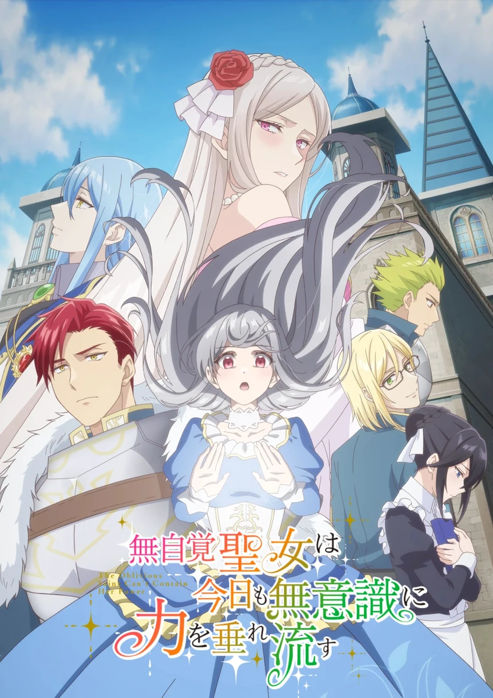

COMPLETE RECORD · Pages 轻量资料
无自觉圣女今天也无意识地释放力量
無自覚聖女は今日も無意識に力を垂れ流す
别名
- The Oblivious Saint Can't Contain Her Power
- Mujikaku Seijo wa Kyou mo Muishiki ni Chikara wo Tare Nagasu
- 形式
- TV
- 首播
- 2026-06-30
- 集数
- 0 集
- 评分
- 4.4
- 评分人数
- 50
SYNOPSIS
简介
长年活在圣女姐姐阴影下的卡洛琳娜，为了证明自己的价值，答应与王子进行政治联姻。没想到王子是个温柔绅士，让卡洛琳娜首次感受到被珍视的幸福，并在自信蜕变中觉醒了神秘力量；与此同时，留在故乡的姐姐，其完美的生活却开始走向崩溃。
[简介原文] 優秀なサンチェス公爵家には二人の姉妹がいた。 姉のフローラは才色兼備な聖女候補。 妹のカロリーナは地味で 才能もない落ちこぼれ……。 カロリーナは優秀な姉と比べられ、 劣等感を抱える日々を送っていた。
ある日、カロリーナのもとに隣国との 関係調整のため第二皇子との縁談が舞い込む。 ただし、皇子は“野蛮”で“残酷無比”と噂の人物。
「お役に立てるなら」
国を守るため政略結婚を受け入れるカロリーナ だったが、 この決断が人生を一変させる──。
噂に反して紳士的な皇子や 新しい家族に正当に評価され、 少しずつ自分を認められるように なっていくカロリーナ。 さらに、不思議な力が 宿っていることが判明する。
一方、王国に残された フローラは不調続きで……。
これは、落ちこぼれ令嬢と 不器用な皇子が 幸せをつかみ取る、 愛の物語──。
EPISODE LOG
正片章节
已收录 12 条正片章节
- 1サンチェス公爵家の出来損ない 首播：2026-06-30时长：24 分钟
- 2戦好きの第二皇子 首播：2026-07-07
- 3建国記念パーティー 首播：2026-07-14
- 4赤い瞳とルビー 首播：2026-07-21
- 5秘められた神聖力 首播：2026-07-28
- 6第6话 首播：2026-08-04
- 7第7话 首播：2026-08-11
- 8第8话 首播：2026-08-18
- 9第9话 首播：2026-08-25
- 10第10话 首播：2026-09-01
- 11第11话 首播：2026-09-08
- 12第12话 首播：2026-09-15